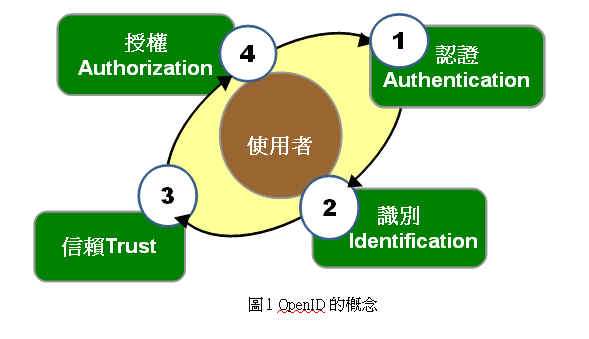
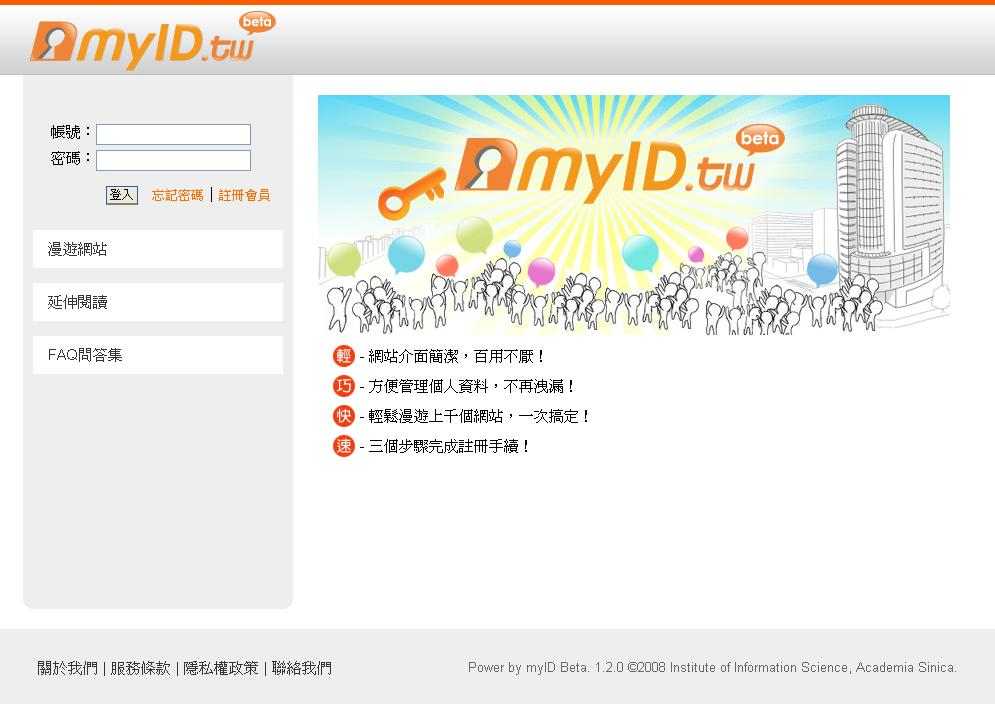
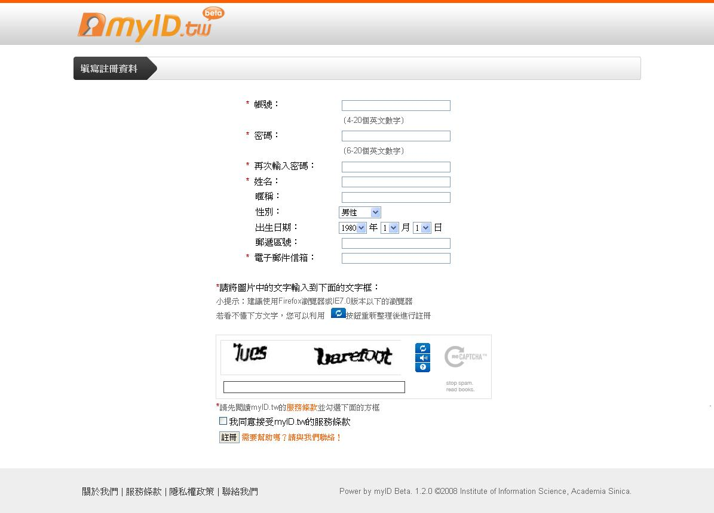
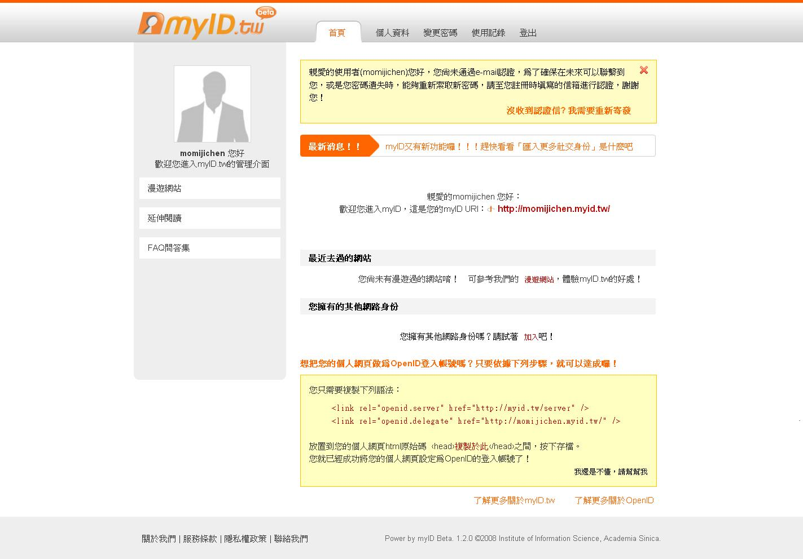
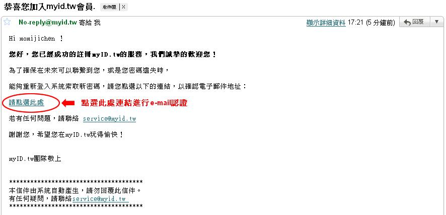
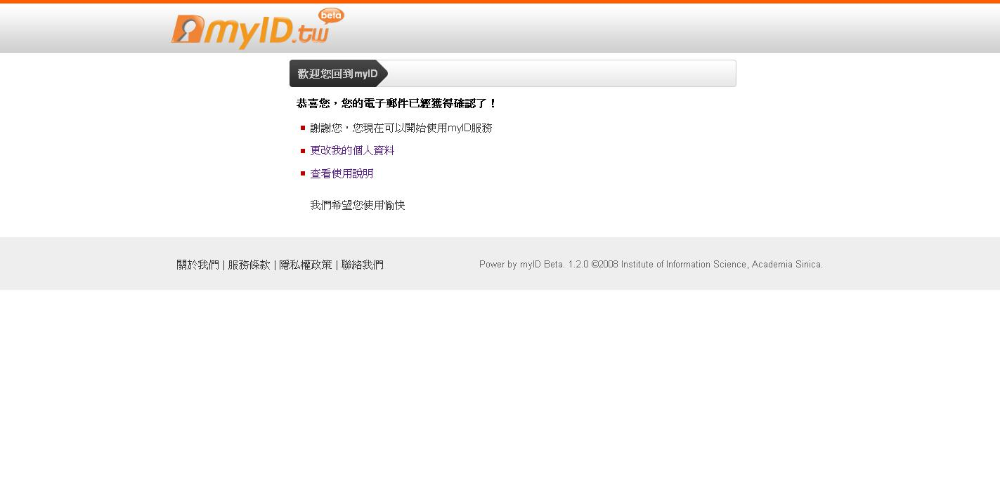
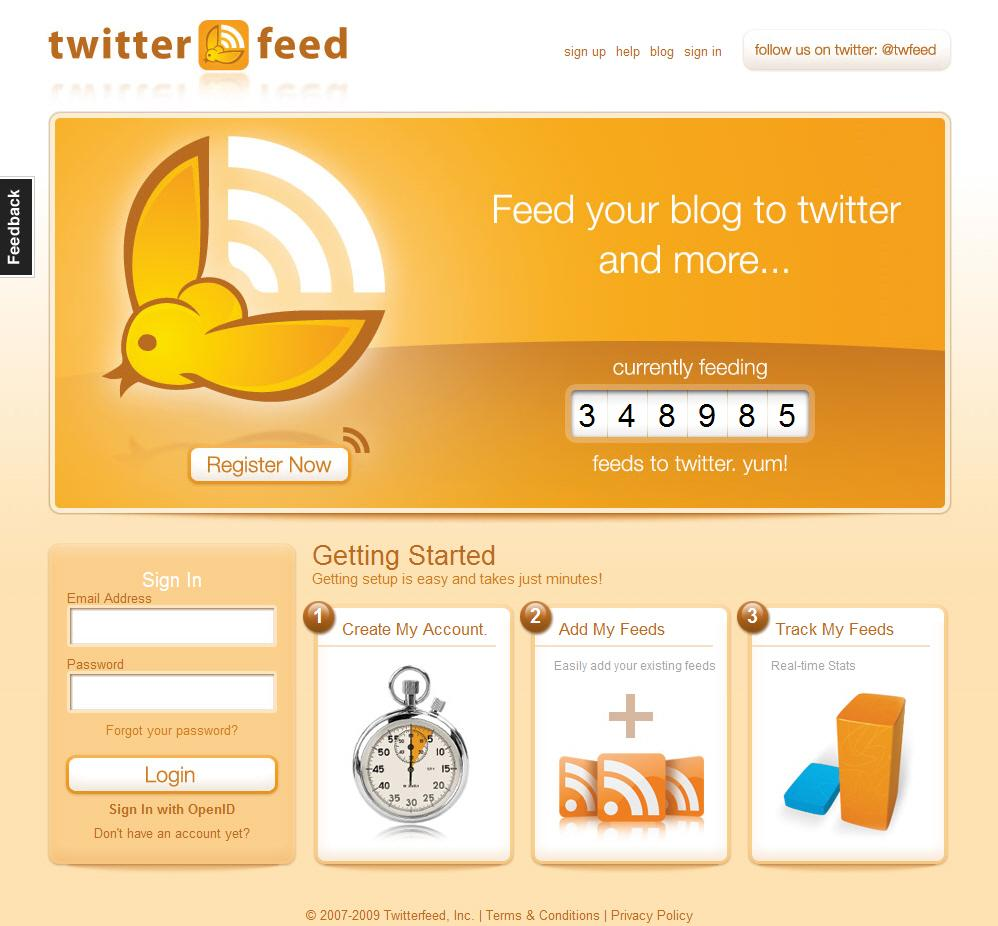
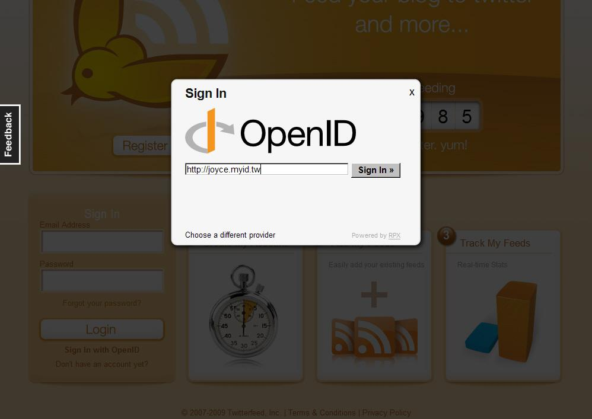
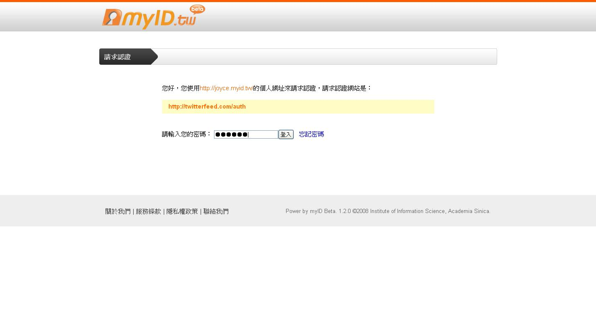
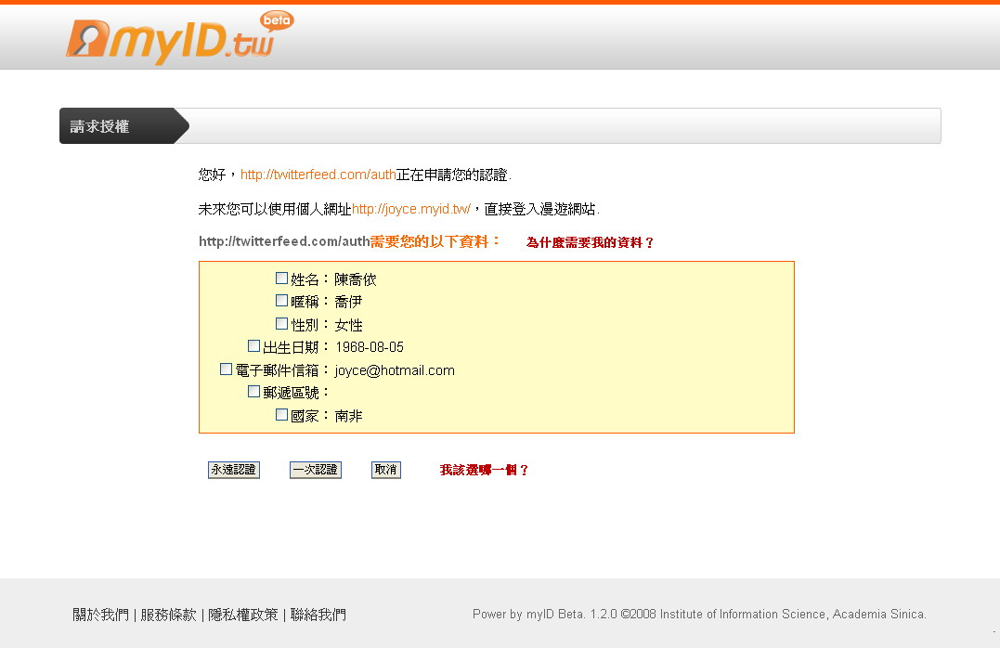

也紀念我們永遠的朋友 李士傑先生（Shih-Chieh Ilya Li）。
OpenID：以使用者為中心（User-centric）的單一網路身分認證
<專案源起>
隨著資訊科技快速發展與寬頻網路普及，網路使用者持續增長，使用習慣瀕臨轉變。在 Web2.0 發展熱潮下，您是否發覺自己擁有太多組的網路帳號密碼，造成登入時需要回想一下配對是否正確？或是有些使用頻率較低的網站，經一段時間就忘記帳號密碼，造成急用時的不便利？有鑑於此，Single Sign-On（單一簽入）的想法開始被提出，亦即使用者採同一帳號密碼，可登入多個網站，OpenID 就是單一簽入技術的其中一種作法。
<專案簡介>
myID.tw 專案是中央研究院－資訊科技創新研究中心（資創中心），所打造的 OpenID 服務，免費發行 OpenID 給使用者，提供 OpenID 的認證服務（Authentication service）與身份識別服務（Identity service）。myID.tw 專案發行的 OpenID 就稱作 myID，myID 遵循 OpenID Authentication 1.1 的規格，實現了 Single Sign-On 的服務機制。使用 OpenID 無需額外的軟硬體，是單純透過網頁瀏覽器與伺服端溝通來完成認證，適用於架構在 HTTP／HTTPS 之上的網路服務。而運作的方式是以使用者為中心，結合了認證、識別、信賴、授權等服務圍繞其外的概念。

圖1 OpenID的概念
OpenID 的使用上分為 2 個步驟介紹：
1.於 myID.tw 網站申請一個 OpenID 帳號。
2.使用 OpenID 登入網站。
<申請 OpenID 帳號>
第一步、進入 myID.tw 網站，按下頁面中的「註冊會員」連結，就可以開始準備註冊一個新的帳號。

圖2 中央研究院－資創中心 myID.tw 專案首頁
第二步、請依序在帳號、姓名、密碼、Email 欄位填寫適當內容，並於最下方完成文字辨識測試，以確保不是由機器人程式申請帳號，測試內容為兩個英文單字，輸入時中間不需空格，輸入完再按「註冊」按鈕。

圖3 註冊頁面
第三步、出現「歡迎您進入 myID.tw 的管理介面」的畫面後，使用者已經可以開始使用myID.tw 的服務了！此時使用者可以在右方中間處看到目前的 OpenID URI，例如：圖 4 上的 https://momijichen.myid.tw/ 就是註冊完成的 OpenID，未來只要在其他支援 OpenID 的網站登入時，直接輸入 https://momijichen.myid.tw/ 即可登入，完全不用再註冊新帳號。

圖4 註冊成功畫面
第四步、若使用者已看到右上畫面有訊息提示，表示目前尚未通過 e-mail 認證，請收信並按照信件中的指示啟用 OpenID 帳號。若使用者未認證e-mail，雖仍可使用 myID.tw 的服務，但若將來遺忘了自己的密碼，myID.tw 將無法使用當初使用者註冊的 e-mail 寄發密碼忘記的信函，所以強烈建議使用者註冊時便點選信件中的連結認證 e-mail。

圖5 e-mail認證信件
第五步、點選認證連回 myID.tw 網站後，正式啟用 myID.tw 的服務便完成！

圖6 認證成功畫面
<使用 OpenID 登入網站>
myID.tw 發行的 OpenID 稱作為 myID，當使用者在 myID.tw 申請好了 myID 之後，如何使用才能登入網站呢？在此用 twitterfeed 這個服務作為使用 myID 的登入示範。
第一步、twitterfeed 首頁找到「Sign In with OpenID」的連結，在上面按一下滑鼠左鍵。

圖7 twitterfeed 首頁
第二步、出現多種登入方式，要選擇右下角的
圖8 選擇右下角 OpenID 的按鈕
第三步、請使用者填入自己的 myID。此範例中使用https://joyce.myid.tw

圖9 輸入OpenID帳號
第四步、此時畫面會導回到 myID.tw，要求使用者輸入密碼。

圖10 導回 myID.tw 輸入密碼
第五步、輸入密碼後，會到請求使用者勾選項目，授權同意將那些資料傳到 twitterfeed 的畫面，可選擇按永遠認證、一次認證或取消，完成後會導回 twitterfeed 的頁面，使用 myID 登入 twitterfeed 的步驟就完成了。

圖11 使用者可選擇要給 twitterfeed 的個人資料
從上述例子可知，若想使用 twitterfeed 的服務不需要專門去申請一個 twitterfeed 的帳號，只要使用 myID 登入有支援 OpenID 認證的網站 ，不需要申請帳號，就可登入你想使用的網站。同時你的 myID 亦可以到其他支援 OpenID 登入的網站去登入，不受登入次數影響。
您可至 https://myid.tw/profile/openidlist 體驗更多 myID 帶給您的便利
想更了解 OpenID 技術，請至 OpenID 技術手冊下載點
<未來發展>
MyID 開始服務至今已快一年，過去一年裡 OpenID 普及相當迅速，由於 myID 開發時 OpenID Authentication 2.0 的規格尚未普及，如今整體環境進步，許多大型服務也開始支援 OpenID，這些大型服務採行較新的 OpenID Authentication 2.0 標準，同時也混雜一部分自有規格。所以 myID 要與更多的網站介接將 OpenID Authentication 2.0 新的標準納入是下一階段既定的工作，而與大型網站介接的特殊調整也一併考量。其次，myID 目前所做的 OpenID 身份發行服務還不算完全成功，還需著重在協助需要身份認證服務網站的推廣交流，使其發展成為可接受 OpenID 登入之網站，讓使用 OpenID 的管道更為暢通。
<專案摘要>
專案名稱: myID.tw
最新版本: Beta1
專案首頁: https://of.openfoundry.org/projects/997
官方網站: https://myid.tw/
程式碼授權: GPL
作業環境: 除了IE8尚未完全適用之外，其他所有網頁瀏覽器皆適用。
適用對象: 一般大眾
漫遊網站: https://myid.tw/profile/openidlist
E-Mail：contact@openfoundry.org Address：台北市南港區研究院路2段128號 中央研究院資訊科學研究所 . 隱私權條款. 使用條款